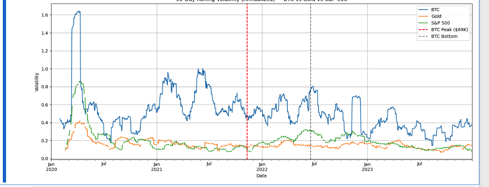

Volatility, in finance and economics, reflects the degree of uncertainty or risk in the returns of an asset. But risk is not a fixed number. It changes across time, under different economic regimes, and in response to shifts in investor sentiment. In this project, I set out to understand how the volatility of three distinct assets, Bitcoin, Gold, and the S&P 500, changed over a four year period from 2020 to 2023. Instead of using a single average to summarize risk, I applied a rolling window approa...
To carry out the analysis, I collected daily price data for all three assets using Python and the yfinance library. I then calculated log returns, which are commonly used in financial modeling because they are time-additive and account more effectively for compounding. For each asset, I applied a 30-day rolling standard deviation to the log returns and annualized the result by multiplying it by the square root of 252, the approximate number of trading days in a year. The graph that results from thi... 
The graph reveals clear differences in how each asset behaves. Bitcoin experienced the highest and most persistent volatility. It saw sharp increases in risk during price surges and drawdowns, and it did not settle back into a low volatility regime even after major corrections. This pattern is consistent with volatility clustering, a well known concept in time-series econometrics where periods of high volatility are often followed by more of the same. In contrast, Gold remained steady with low and ...
From an economics perspective, this analysis relates directly to the concept of the risk-return tradeoff. In theory, riskier assets should offer higher expected returns. Bitcoin certainly shows high volatility, but its return profile is inconsistent and often driven by speculative factors. This raises a question about whether its risk is truly systematic and compensated, or largely idiosyncratic and sentiment driven. Gold, with its lower risk and more predictable behavior, appeals to investors who ...
This project helped me move beyond static risk summaries and explore how volatility actually behaves across time. It reinforces the idea that risk is not just a number. It is a dynamic, evolving feature of financial markets that responds to real world events, investor behavior, and macroeconomic conditions. By using a rolling volatility model, I was able to capture and visualize this evolution. For analysts, economists, and portfolio managers, this kind of analysis offers valuable insight into how ...